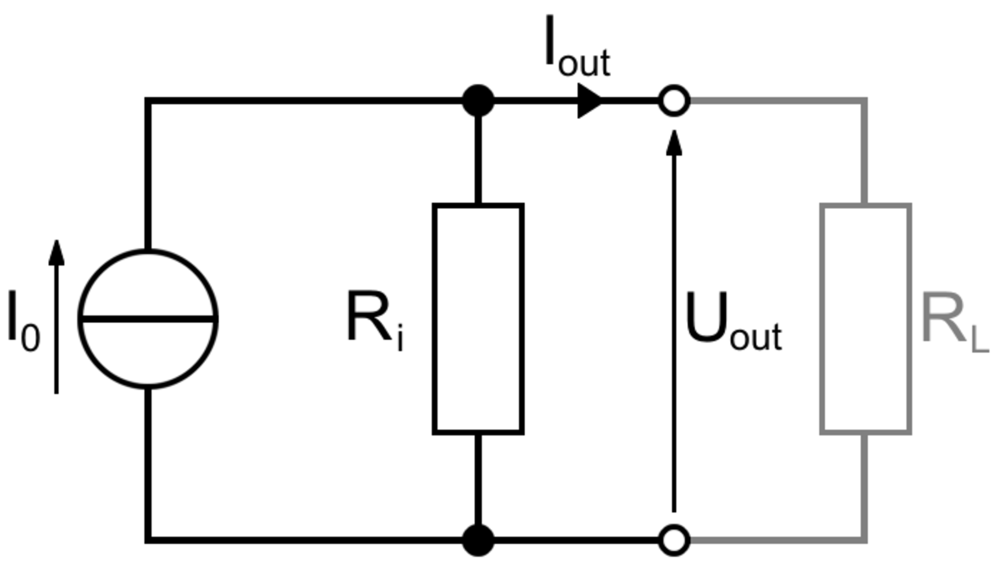
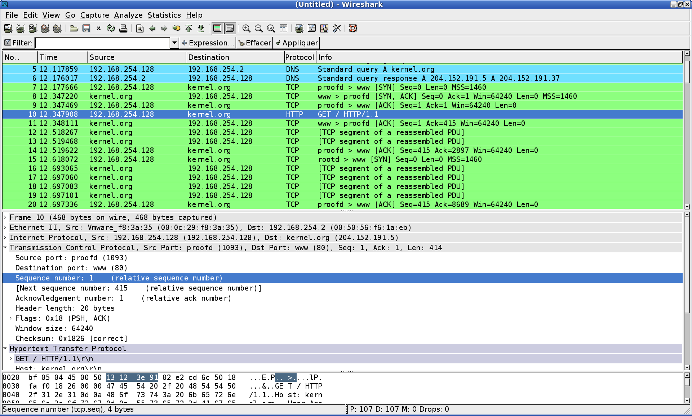
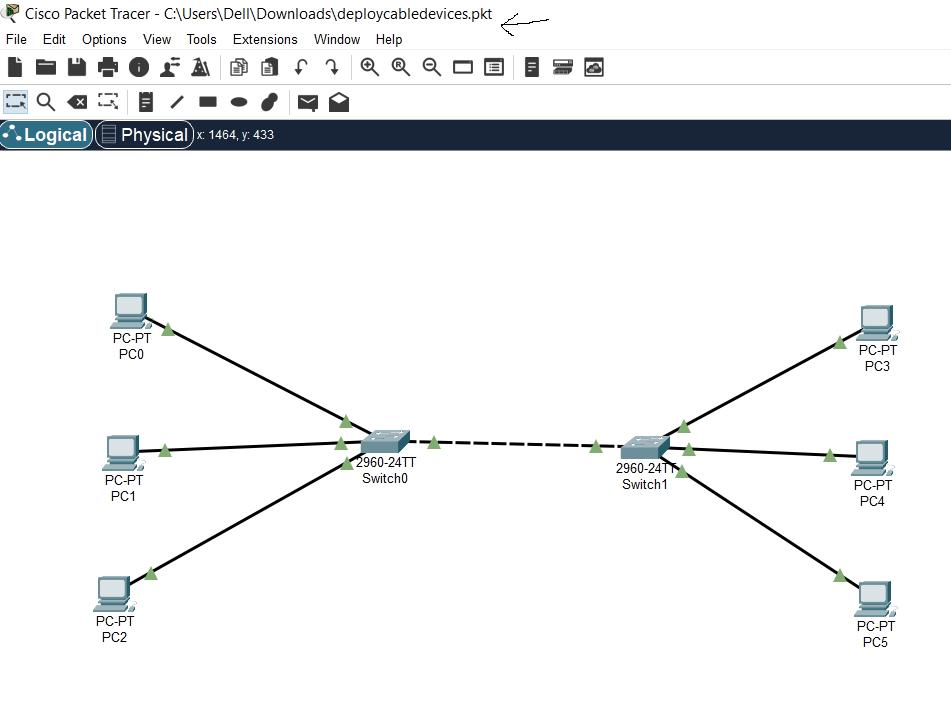
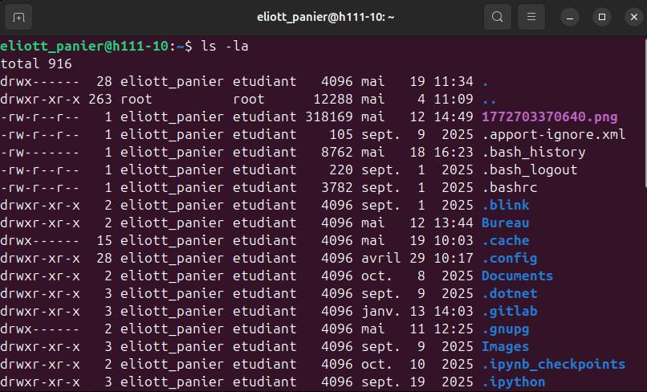
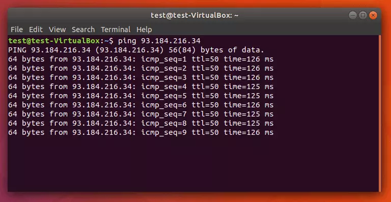
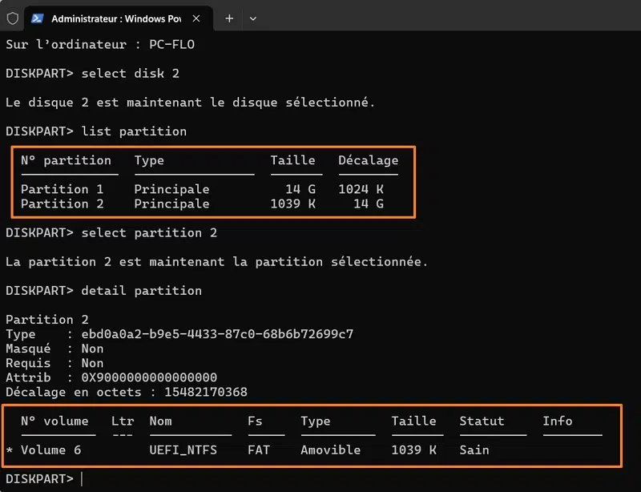

Bloc de Compétences 1 // Niveau 1
Administrer les réseaux et l’Internet
Démarche réflexive sur la gestion des infrastructures, des systèmes d'exploitation et la configuration des services réseaux de base.
AC11.01 // Électronique Fondamentale
Maîtriser les lois fondamentales de l’électricité
- Ce que j'ai fait : J'ai étudié les circuits électriques, manipulé des multimètres en TP et assisté à des dépannages concrets sur site.
- Pourquoi je l'ai fait : Pour acquérir les bases physiques indispensables avant d'intervenir en sécurité sur des équipements physiques de réseaux et télécoms.
- Comment je l'ai fait : En mobilisant les ressources théoriques du module R1.04 (Électronique) et en appliquant les lois d'Ohm et de Kirchhoff lors des mesures de tension/courant.
- Mes difficultés : Réussir la transition entre les calculs théoriques complexes sur papier et les mesures physiques fluctuantes à l'oscilloscope.
- Ce que j'en ai appris : La rigueur des lois électriques conditionne directement la sécurité des techniciens et l'intégrité du matériel informatique.
- Ce que je ferais autrement : Mieux documenter et revérifier mes schémas de montage avant de mettre le circuit sous tension.
Trace Pertinente

[Schéma de circuit / Mesures R1.04]
AC11.02 // Architecture des Systèmes
Comprendre l'architecture et les fondements des systèmes numériques
- Ce que j'ai fait : J'ai étudié les principes du codage de l'information (binaire, hexadécimal), l'architecture des ordinateurs et les bases d'Internet.
- Pourquoi je l'ai fait : Pour assimiler la manière dont les données transitent, sont encapsulées et sont traitées à travers les équipements de télécommunication.
- Comment je l'ai fait : Via les ressources des modules d'architecture et d'initiation aux réseaux (R1.01/R1.02), en découpant des trames réseau reçues.
- Mes difficultés : Intégrer la logique des masques de sous-réseau variables (VLSM) et la conversion rapide des adresses IPv4/IPv6.
- Ce que j'en ai appris : Que toute la couche haute d'Internet repose sur une encapsulation binaire stricte et standardisée.
- Ce que je ferais autrement : Pratiquer des exercices de conversion et de calculs de masques de manière plus régulière pour gagner en automatisme.
Trace Pertinente

[Tableau d'encapsulation / Trame réseau]
AC11.03 // Initiation Réseau
Configurer les fonctions de base du réseau local
- Ce que j'ai fait : J'ai conçu des maquettes de réseaux locaux virtuels, configuré des adresses IP, des passerelles et implémenté des VLANs de base.
- Pourquoi je l'ai fait : Pour être capable de simuler et de mettre en œuvre une connectivité locale fonctionnelle inter-équipements conforme à un plan établi.
- Comment je l'ai fait : En manipulant le logiciel Cisco Packet Tracer et des commutateurs physiques lors des TP de la SAÉ 2.01.
- Mes difficultés : Assurer le routage inter-VLAN correct et ne pas oublier d'activer ou d'encapsuler les ports en mode Trunk.
- Ce que j'en ai appris : Le moindre décalage d'un seul chiffre dans un masque ou une passerelle détruit la connectivité de toute une zone.
- Ce que je ferais autrement : Rédiger un tableau d'adressage strict sur papier avant de lancer la moindre commande de configuration dans le terminal Cisco.
Trace Pertinente

[Topologie Packet Tracer annotée]
AC11.04 // Environnements OS
Maîtriser les rôles et les principes fondamentaux des OS
- Ce que j'ai fait : J'ai manipulé les architectures de gestion des processus, des fichiers et optimisé des configurations systèmes avancées (Windows/Linux).
- Pourquoi je l'ai fait : Pour comprendre comment interagir avec le système d'exploitation hôte afin d'y configurer par la suite des services réseaux ou de sécurité.
- Comment je l'ai fait : En exploitant les cours de base des OS (R1.08), en utilisant les terminaux PowerShell et Bash pour automatiser ou vérifier des paramètres.
- Mes difficultés : Mémoriser la syntaxe stricte et les droits d'accès utilisateur sous Linux (chmod, chown) pour la sécurisation des répertoires.
- Ce que j'en ai appris : L'administration d'un réseau passe inévitablement par une maîtrise fine de la console système et du fonctionnement du noyau de l'OS.
- Ce que je ferais autrement : Utiliser de manière systématique des machines virtuelles isolées (VMware) pour tester mes modifications système sans impacter la machine physique.
Trace Pertinente

[Capture CLI Linux / Gestion Processus]
AC11.05 // Diagnostic Réseau
Identifier les dysfonctionnements du réseau local et savoir les signaler
- Ce que j'ai fait : J'ai analysé des pannes réseau simulées, tracé des coupures de liens et rédigé des rapports d'incidents clairs.
- Pourquoi je l'ai fait : Pour acquérir les réflexes méthodologiques d'un technicien support capable d'isoler un problème sur la couche physique ou logique.
- Comment je l'ai fait : En utilisant les outils de diagnostic ICMP classiques (`ping`, `traceroute`, `nslookup`) et en inspectant les logs d'erreurs en TP.
- Mes difficultés : Distinguer rapidement si l'origine d'un problème de résolution de nom venait d'un mauvais adressage client ou d'une panne du serveur DNS local.
- Ce que j'en ai appris : Qu'un bon diagnostic doit suivre scrupuleusement l'ordre des couches du modèle OSI (du physique vers l'application) pour faire gagner du temps à l'équipe.
- Ce que je ferais autrement : Structurer mes rapports d'anomalies de manière plus standardisée en utilisant des fiches d'incidents types.
Trace Pertinente

[Résultats Commandes Ping & Traceroute]
AC11.06 // Poste Client
Installer un poste client, expliquer la procédure mise en place
- Ce que j'ai fait : J'ai assemblé physiquement des postes, configuré les paramètres réseaux hôtes, installé des suites applicatives et documenté mon protocole.
- Pourquoi je l'ai fait : Pour assurer le déploiement conforme et standardisé d'un poste informatique utilisateur au sein d'une infrastructure d'entreprise.
- Comment je l'ai fait : En appliquant les bonnes pratiques de maintenance informatique matérielle et logicielle, complétées par la rédaction d'un guide utilisateur pas-à-pas.
- Mes difficultés : Expliquer les étapes techniques complexes avec des termes simples, clairs et accessibles pour un utilisateur non technicien.
- Ce que j'en ai appris : La rédaction d'une procédure claire est aussi importante que l'installation technique elle-même pour assurer la pérennité du parc informatique.
- Ce que je ferais autrement : Créer une checklist simplifiée en début de document pour permettre une vérification rapide en fin d'installation.
Trace Pertinente

[Extrait de Procédure Technique Rédigée]